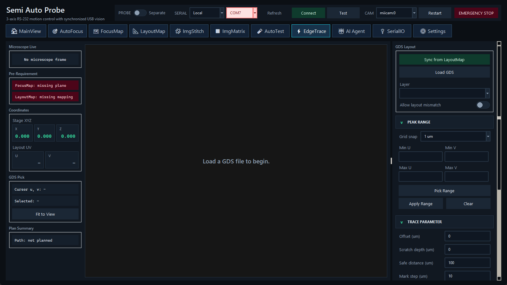

以 LayoutMap 路径与 FocusMap 高度为基准，按 scratch/contact 序列追踪器件边缘。

在 GDS Layout 选择 edge/peak range，设置 grid/range；在 Trace Parameter 设置 offset、scratch、safe、step 和 minimum segment，然后单击 Plan。Plan Summary 应显示段数、起点与预计范围。
只有完成以上状态，Run Segment 或 Auto Run 才应开始。Run Segment 便于逐段观察；Auto Run 连续执行全部计划段。
Stop 在当前阻塞动作返回后停止新增 trace 点，但不会自动回到 safe Z，可能把针留在 scratch/contact Z。顶栏急停会发送控制器全轴停止，却不会设置 EdgeTrace 的循环停止标志；因此还要按本页 Stop 并现场确认。当前应用关闭流程也不会等待 EdgeTrace worker，EdgeTrace 运行时不要直接关闭窗口。
观察 microscope、当前坐标、计划颜色、segment 进度与页面状态。只有未被 Stop 的正常 Auto Run 完成路径才会执行最终 safe-Z lift；Stop/异常后的 safe Z 必须人工确认。如果 GDS layer/mapping/FocusMap 不匹配，应用会阻止开始并给出 prerequisite 提示。